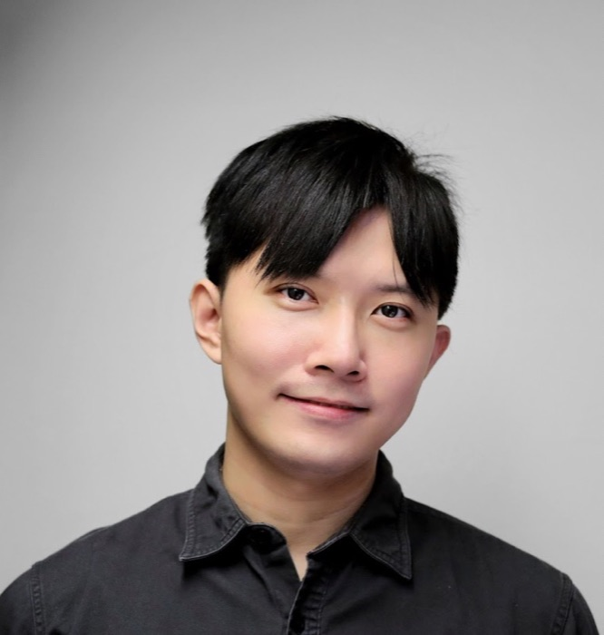

People
The team

Principal investigator
Po-Han Chiang, PhD 江柏翰 博士
National Yang Ming Chiao Tung University, College of Electrical and Computer Engineering
Associate Professor and Director, Interdisciplinary Master's Program in Neurotechnology
Associate Professor, Institute of Intelligent Bioelectrical Engineering
Joint appointments: Department of Electrical and Computer Engineering; School of Medicine
Po-Han Chiang received his PhD from the Institute of Neuroscience at National Yang-Ming University, where he studied the hippocampus in memory and the amygdala in fear. Convinced that the tools of neuroscience were holding the field back, he joined the Department of Materials Science and Engineering at MIT as a postdoctoral associate. There, with Prof. Polina Anikeeva, he combined magnetic nanotechnology, electrical engineering, neuroscience and molecular genetics to develop magnetogenetics for wireless remote control of neurons. His lab at NYCU develops more precise magnetic stimulation and TIBS, a non-invasive deep brain stimulation technique, hoping to serve both neuroscience research and the clinical treatment of neurological disease. More recently he has turned to neuromorphic computing and invented a new AI architecture, PHCSSM.
phc (at) nycu.edu.tw · Office: Engineering Building VI 464 (Guangfu Campus) and Shu-Tien Building 221 (Boai Campus) · Google Scholar · LinkedIn
Experience
- 2026–now
- Associate Professor, National Yang Ming Chiao Tung University
- 2019–2026
- Assistant Professor, National Yang Ming Chiao Tung University (formerly National Chiao Tung University)
- 2016–2019
- Postdoctoral Associate, Massachusetts Institute of Technology
Education
- 2009–2015
- PhD in Neuroscience, National Yang-Ming University
- 2005–2009
- BSc, National Yang-Ming University
Honours
- 2026
- 1st place, Track 2 (compute efficiency), THOR × NeuroBench Challenge 2026
- 2025
- Outstanding Teaching Award, College of Electrical and Computer Engineering, NYCU
- 2025
- Outstanding Mentor Award, College of Electrical and Computer Engineering, NYCU
- 2023
- Outstanding Teaching Award, NYCU
- 2020–now
- Fellow of the Higher Education Academy (FHEA), Advance HE, UK
- 2019–2024
- Einstein Program Young Scholar Fellowship, Ministry of Science and Technology
Join us
Work with us
We welcome MS and PhD applicants and undergraduate project students from electrical engineering, medicine, biology and beyond.